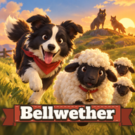

Bellwether: Çoban Köpeği
Oyun hakkında
Bellwether'da çoban köpeğini yönetip koyunları gün batmadan ağıla sokuyorsun. Beş günlük bölümler, fırtına, sis ve rüzgâr gibi olaylar, bisikletliler, inekler, keçiler, kurt baskınları ve Boz Ayı boss'u seni bekliyor. Online kapışmada arkadaşlarınla ya da rastgele rakiplerle aynı haritada yarışabilirsin. Her köpeğin kendine özgü bir yeteneği var; yünle köpek, çiftlik yükseltmesi ve şapka alabilirsin.
Destek
Bir sorun mu var, önerin mi var? Bize yazmanın en hızlı yolu aşağıdaki düğme. Cihaz modelini ve oyunun sürümünü (Ayarlar ekranında) eklersen daha çabuk yardımcı olabiliriz.
Destek talebi gönderSık sorulanlar
İlerlemem nerede saklanıyor? Tüm ilerleme cihazında saklanır. Uygulamayı silersen ilerleme de silinir.
Reklam ya da uygulama içi satın alma var mı? Bu sürümde yok.
Ses gelmiyor. Telefonun sessiz modda olmadığından ve Ayarlar'da ses efektlerinin açık olduğundan emin ol.
Nasıl oynanır? Ekranın herhangi bir yerinde sürükleyerek köpeği yönlendir. Kırmızı düğme havlar, mavi düğme atılır, altın düğme köpeğinin özel yeteneğini kullanır.
About the game
In Bellwether you guide a sheepdog and bring the flock home before dark. Five-day chapters, storms, fog and gales, cyclists, cows, goats, wolf raids and a brown bear boss. Online trials let you race friends or random players on the same field. Every dog has its own special skill; spend wool on dogs, farm upgrades and hats.
Support
Found a problem or have an idea? The quickest way to reach us is the button below. Mentioning your device and the game version (in Settings) helps.
Contact supportWhere is my progress kept? On your device only. Deleting the app deletes your progress.
Ads or in-app purchases? None in this version.
© 2026 Muhammed Esad Bacaci